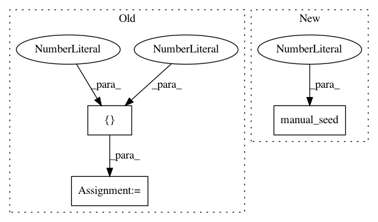

ba8de5d0776da82a0f57b710f9648539555164c8,test/nn/conv/test_x_conv.py,,test_x_conv,#,5
Before Change
def test_x_conv():
in_channels, out_channels = (16, 32)
edge_index = torch.tensor([[0, 0, 0, 1, 2, 3], [1, 2, 3, 0, 0, 0]])
num_nodes = edge_index.max().item() + 1
x = torch.randn((num_nodes, in_channels))
pos = torch.rand((num_nodes, 3))
conv = XConv(in_channels, out_channels, dim=3, kernel_size=2, dilation=2)
After Change
out1 = conv(x, pos)
assert out1.size() == (8, 32)
torch.manual_seed(12345)
out2 = conv(x, pos, batch)
assert out2.size() == (8, 32)
jit = torch.jit.script(conv)
In pattern: SUPERPATTERN
Frequency: 3
Non-data size: 3
Instances
Project Name: rusty1s/pytorch_geometric
Commit Name: ba8de5d0776da82a0f57b710f9648539555164c8
Time: 2020-06-26
Author: matthias.fey@tu-dortmund.de
File Name: test/nn/conv/test_x_conv.py
Class Name:
Method Name: test_x_conv
Project Name: r9y9/nnmnkwii
Commit Name: 1ddfc61a8b56ce9baf598be6d040f3704a166730
Time: 2017-07-30
Author: zryuichi@gmail.com
File Name: tests/test_modspec.py
Class Name:
Method Name: test_modspec_gradcheck
Project Name: cornellius-gp/gpytorch
Commit Name: 91b0d220c8e816766fd4565e1d2f5115d3afbefe
Time: 2018-10-12
Author: gpleiss@gmail.com
File Name: test/functions/test_inv_matmul.py
Class Name: TestInvMatmulBatch
Method Name: setUp